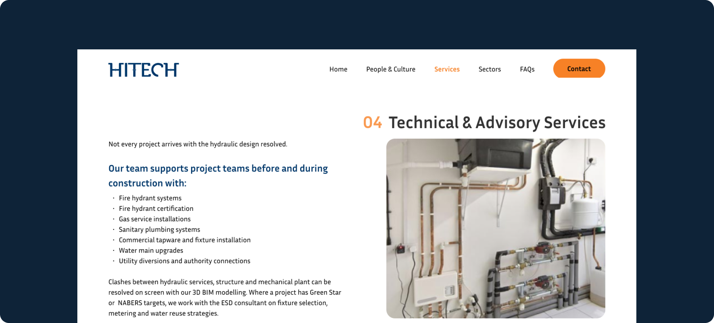

Overview
As part of my UX/UI internship at Pixelz360, I was tasked with designing a services webpage for HITECH Commercial Plumbing. The brief was to translate client requirements and existing SEO content into a clear, well-structured webpage that aligned with the existing homepage design and made the company's services easy for commercial construction clients to navigate and understand.
A key part of the project was ensuring the new page aligned with the existing homepage design, maintaining visual consistency across the website. I focused on content hierarchy, layout and usability to make the information easy to navigate while reinforcing the overall brand identity.